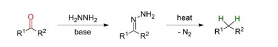
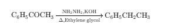
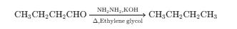
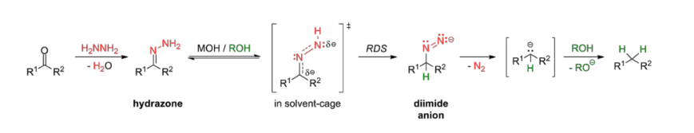

The Wolff–Kishner reduction is an important organic reaction used for the reduction
of aldehydes and ketones into hydrocarbons by treatment with hydrazine
(NH2NH2) in the presence of a strong base such as KOH under high temperature.
In this reaction, the carbonyl group (>C=O) of aldehydes or ketones is completely removed
and converted into a methylene group (-CH2-).
The reaction proceeds through the formation of a hydrazone intermediate and finally produces nitrogen gas.
The Wolff–Kishner reduction is especially useful under strongly basic conditions.

Acetone reacts with hydrazine and potassium hydroxide to produce propane.

Butanal reacts with hydrazine and potassium hydroxide to produce n-Butane.

1. Carbonyl compound reacts with hydrazine to form hydrazone.
2. Strong base removes proton from hydrazone intermediate.
3. Rearrangement and elimination of nitrogen gas occur.
4. Hydrocarbon is formed as the final product.

| Substrate Functional Group | Clemmensen Condition (Zn(Hg)/HCl) | Wolff–Kishner Condition (NH2NH2/KOH) |
|---|---|---|
| Acetals / Ketals | Hydrolyzed back to carbonyls | Stable (Intact) |
| Esters | Stable (usually) | May undergo hydrolysis to carboxylic acids |
| Alcohols (-OH) | May undergo substitution/elimination | Stable (Intact) |